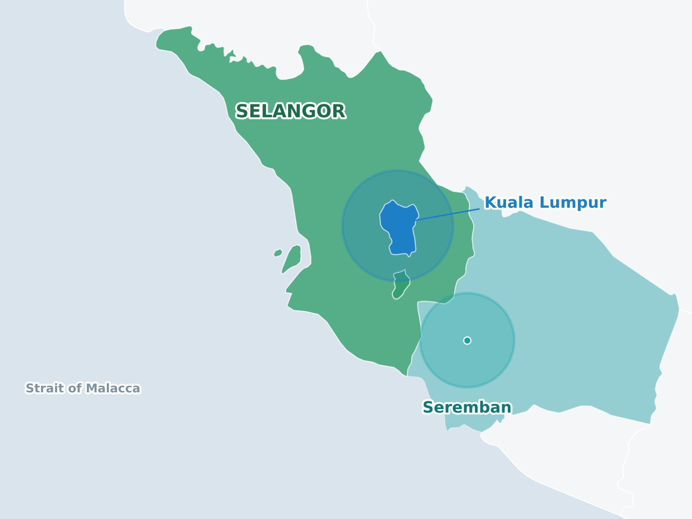

Serving KL, Selangor & Seremban since 2021
We specialise in professional fabric cleaning services for both residential and commercial spaces. From sofas, mattresses and carpets to office chairs, curtains and vehicle interiors, our trained team uses professional cleaning equipment and proven techniques to deliver a cleaner, fresher and healthier environment.
With years of experience in fabric detailing, we take pride in providing reliable service, quality workmanship and convenient on-site cleaning, so you can leave the dirty work to us.
The standards you can expect every time you book with us.
Over six years of professional fabric cleaning for homes across Selangor, Kuala Lumpur and Seremban.
Professional grade machines and cleaning solutions, chosen to suit each fabric and type of stain.
Our team is trained to identify fabric types and use the right method for your carpets, sofas, curtains and mattresses.
Not satisfied with the result? Let us know within 3 days and we will return to re clean at no extra charge.
Five types of fabric items, each cleaned with the right method. Tap one to see photos of our work.
Fabric safe treatment for sofas and upholstered chairs, including stain and odour removal.
See photosDeep extraction that lifts ground in dirt and odour from wall to wall carpet and rugs.
See photosOn site cleaning for curtains and drapes, so you don't have to take them down.
See photosDust mite, sweat and stain treatment to leave your mattress fresh to sleep on.
See photosGentle, thorough cleaning for strollers, playpens and child car seats, removing milk stains, spills and odours.
See photosReal reviews from people we have cleaned for.
Requested for sofa cleaning. Amazing experience, good and clean work. Abang is friendly too! Keep it up. Will surely repeat.
My first time using CleanUp service to clean my carpets. They are very detailed in making sure not only my carpets but floor beneath clean with refreshing smell. Hope it will last till raya n make my guests envy me, The carpets look like brand new.
Super service! I messaged and was able to get my mattress cleaned the same day! Only took about 30 minutes and my bed is good as new! 11/10 would recommend!
I have had my Sofa and Car-Seats getting cleaned awesomely by the CleanUp team! I am very satisfied with their top and professional services, will repeat again for sure! Highly recommended 🤙🏽
Alhamdulillah the boys did well for cleanliness, plus with white color can see it nice clean, really recommended, affordable charges will repeat as usual 👍🏻👍🏻👍🏻
We come to you across three areas.

Tell us what needs cleaning and we'll send it straight to our WhatsApp so we can reply with a quotation.
This opens WhatsApp with your order filled in. Just hit send and we'll reply with a quotation.
Quick answers to what customers ask us most.
We serve Selangor (including Shah Alam, Petaling Jaya, Kajang and Klang), Kuala Lumpur and Seremban, along with nearby areas.
Fill in the quote form above, or message us on WhatsApp, and tell us what needs cleaning. We will reply with a quotation.
No. We come to you and clean on site, so your sofas, mattresses, carpets and curtains stay where they are.
Carpets and rugs, sofas and upholstered chairs, curtains, mattresses, and baby items such as strollers, playpens and child car seats. We also clean office chairs and vehicle interiors.
Let us know within 3 days and we will return to re clean at no extra charge.
Yes. We clean fabric items for both residential and commercial customers, including offices.
It depends on the fabric, the item and how well the room is ventilated. We will advise you on drying time after the cleaning.